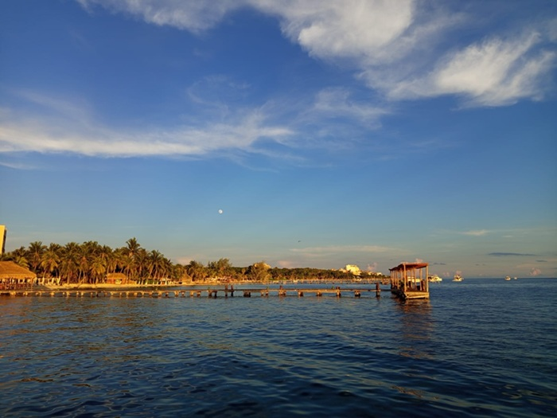
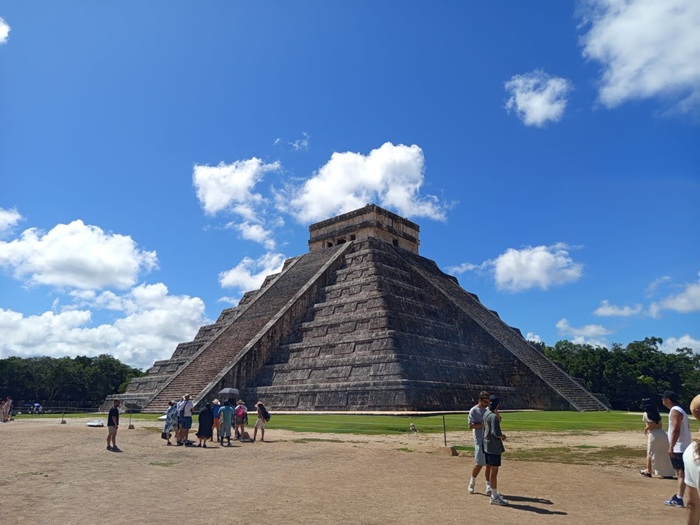

Mi último gran viaje fue a México, una experiencia inolvidable que fue
nuestro viaje de estudios de la carrera. En este viaje, conocimos diferentes sitios e hicimos
actividades diversas
Playa del Carmen
La primera parada fue Playa del Carmen, un lugar vibrante y lleno de vida. Sus calles
están repletas de tiendas, restaurantes y música que invitan a caminar y descubrir cada rincón.
Me encantó la mezcla de cultura mexicana con el ambiente cosmopolita que se respira allí.
Aprovechamos para disfrutar de sus playas en un beach club, aunque el agua estaba caliente y no
había ninguna ola.
Isla Mujeres
Visitamos Isla Mujeres, un paraíso caribeño de aguas turquesas y arena
blanca que parecía sacado de una postal. Pasear por la isla, beber un coco y el viaje en barco
fue una de las experiencias más especiales del viaje.
Volvimos a Cancún en barco contemplando el atardecer, con unas vistas que parecían sacadas de una película.

Chichen Itzá
Uno de los momentos más fascinantes fue la visita a Chichén Itzá, una de las siete
maravillas del mundo moderno. Estar frente a la majestuosa pirámide de Kukulkán fue como
retroceder en el tiempo. Recorrer las ruinas y
aprender sobre su historia y su astronomía fue realmente impresionante, una lección viva de
cultura y arquitectura. Además, también pudimos darnos un baño en algún cenote, lo que hizo
la experiencia aún más inolvidable.

Snorkel
Durante el viaje también hicimos snorkel, una actividad que me dejó recuerdos
imborrables. Nadar entre peces de colores, pulpos y tortugas, observar los corales y sentir la tranquilidad del mar
fue una experiencia única. La claridad del agua permitía ver cada detalle del fondo marino,
convirtiendo cada inmersión en una especie de pequeño descubrimiento.
Paseo en catamarán
Tuvimos la oportunidad de dar un paseo en un pequeño catamarán. Sentir el agua cristalina tan cerca que se
podía tocar con la mano daba la sensación de estar directamente sobre el agua. Además, pudimos apreciar bien
los diferentes colores de este agua.
Aunque el clima fue caluroso y a veces agotador, cada día estuvo lleno de momentos que hicieron que
valiera la pena. Compartir esta aventura con mis compañeros de carrera lo hizo todavía más
especial, fortaleciendo amistades y creando anécdotas que recordaremos siempre.
Este viaje a México no solo fue una oportunidad para conocer lugares increíbles, sino también para
crecer, aprender y vivir experiencias que me acompañarán toda la vida.